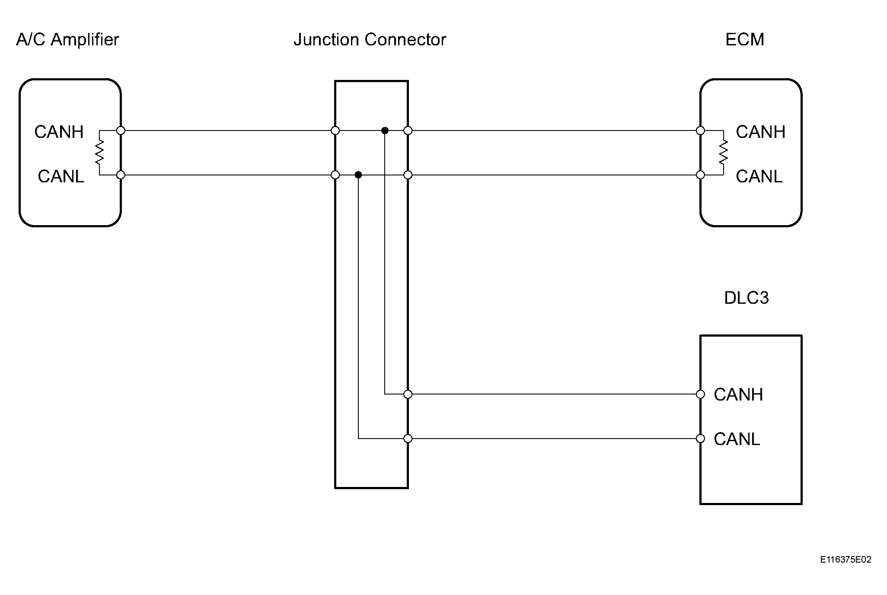

Home
>>
Scion
>>
2006
>>
xB Standard
>>
Repair and Diagnosis
>>
Accessories & Equipment
>>
Communication Devices
>>
Can Communication
>>
Open in CAN Main Bus Line
>>
Wiring Diagram
Open in CAN Main Bus Line: Wiring Diagram
Fig 1: Open In CAN Main Bus Line - Wiring Diagram

Courtesy of © TOYOTA, LICENSE AGREEMENT TMS1002